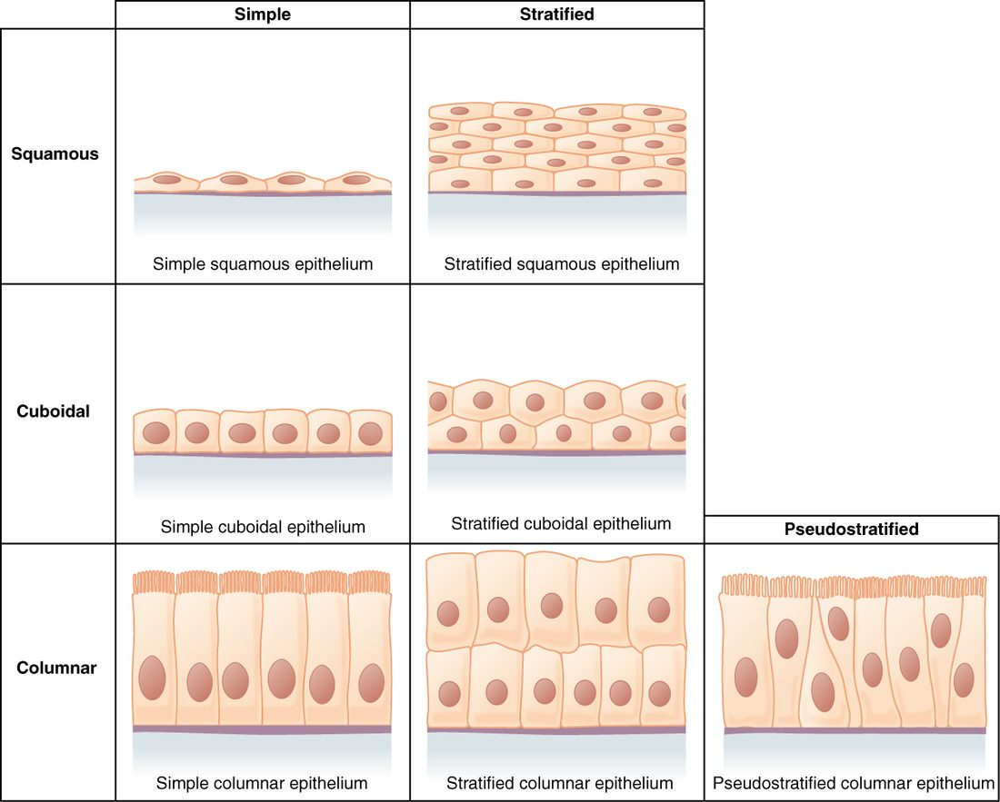

Run your tongue along the inside of your cheek. The smooth, wet surface you feel is a sheet of cells many layers thick, and the cells on top are being rubbed off and replaced all day. That sheet is an epithelium. This page covers the epithelial tissue types and functions: what every epithelium has in common, how to name one from what you see, and where each type sits in your body.
Four tissue types build every organ
A tissue is a group of similar cells working together, plus the material around them. Your body uses only four kinds. These are the four primary tissue types:
- Epithelial tissue covers surfaces and lines hollow spaces. Your skin's outer layer and the lining of your stomach are epithelial.
- Connective: the supporting type. It binds, supports and fills; bone, fat and blood all belong here. It is the next topic.
- Muscle: the type that contracts and moves things. It comes two topics from now.
- Nervous tissue carries electrical signals. It closes this chapter.
Every organ mixes several of these. Your stomach has an epithelial lining, a supporting layer beneath it, muscle in its wall and nervous tissue running through all of it. Learn the four types once and you can read the structure of any organ.
What makes a tissue epithelium
Start with a concrete case: the lining of your trachea. Its cells sit shoulder to shoulder with almost no space between them. One face of each cell looks into the open tube; the other face sits on a thin mat. No blood vessel runs between the cells. Those features define every epithelium (epi- = upon, thel- = originally "nipple", used for a thin covering layer; plural epithelia).
- Tightly packed cells. Tight junctions seal neighbors near the top, and desmosomes rivet them together. Those junctions let a sheet act as a barrier and resist being pulled apart.
- Two different faces. The apical surface (apex = tip) faces the outside world or a hollow space. The basal surface (basis = base) faces deeper tissue. Microvilli and cilia sit on the apical surface only. This top-to-bottom difference is called polarity.
- A lumen to face. Many epithelia line a lumen (Latin for "light" or "opening"): the open space inside a hollow organ or tube, such as the inside of a blood vessel or your esophagus.
- No blood vessels. Epithelium is avascular (a- = without, vascul- = small vessel). Its cells get oxygen and nutrients by diffusion from capillaries in the tissue underneath.
- Constant renewal. Surface cells wear off. Dividing cells near the base replace them. Your stomach lining turns over every few days.
Figure 1 puts those parts on one picture. Notice the arrow: every molecule the cells use has to cross the basement membrane first.
The basement membrane
Every epithelium rests on a basement membrane, a thin, tough mat that glues the sheet to the tissue below. Despite the name, it is not a cell membrane. It is a layer of proteins outside the cells, and it has two parts:
- The basal lamina (lamina = thin sheet) is made by the epithelial cells themselves. It is a fine mesh of proteins and sugar-coated proteins.
- The reticular lamina (reticulum = little net) is made by cells of the tissue underneath. It is a net of thin protein fibers that anchors the basal lamina.
The basement membrane does three jobs. It anchors the cells, so they don't peel off. It acts as a filter for everything diffusing up from the capillaries. And it marks a boundary: when an epithelial cancer breaks through the basement membrane, it has become invasive.
Naming an epithelium: layers and shape
You name an epithelium with two words. The first counts the layers. The second gives the shape of the cells on top.
Layers:
- A simple epithelium is one cell layer thick. Every cell touches the basement membrane.
- A stratified epithelium (stratum = layer) has two or more layers. Only the deepest layer touches the basement membrane.
Shape of the surface cells:
- Squamous (squama = scale): flat, wider than tall, like floor tiles. The nucleus is a flattened oval.
- Cuboidal: about as tall as wide. The nucleus is round and central.
- Columnar: taller than wide. The nucleus is oval and usually near the base.
In a stratified epithelium, the deeper cells are often cuboidal even when the top cells are flat. The name always follows the surface layer, because that layer faces the job. Figure 2 lays out the combinations as a grid.

Simple squamous epithelium: built for diffusion
In your lungs, air sits in tiny sacs called alveoli (alveolus = small hollow; singular alveolus). Oxygen has to cross from the air into your blood. The wall between them is a simple squamous epithelium pressed against a capillary, and together they are less than a thousandth of a millimeter thick.
A single layer of flat cells makes the shortest possible path. Diffusion time rises steeply with distance, so a thin sheet is where fast exchange happens. You find this tissue wherever materials must cross quickly or surfaces must slide:
- Endothelium (endo- = within): the simple squamous lining of your heart and every blood vessel. In capillaries, the endothelium is the whole wall.
- Mesothelium (meso- = middle): the simple squamous surface layer of each serous membrane (the pleura, pericardium and peritoneum). It releases serous fluid, which lets organs slide against each other.
- The air sacs of the lungs and part of the filtering units of the kidneys.
The trade-off: one flat layer offers almost no protection against rubbing. You never find simple squamous epithelium on a surface that food or air scrapes across.
Simple cuboidal epithelium: secretion and absorption
Cube-shaped cells have room for plenty of mitochondria, rough ER and Golgi. That makes a simple cuboidal epithelium the workhorse for moving substances across a sheet, in either direction.
- Kidney tubules. The cells pull water, salts and nutrients back out of the fluid passing through, using active transport. Many have microvilli, which add surface area.
- Thyroid follicles. A thyroid follicle (follicle = small bag) is a hollow ball lined by one layer of cuboidal cells. The cells make and store a thyroid product in the ball's center. When the thyroid is very active, its follicle cells grow taller; when it rests, they flatten.
- Small ducts. The narrow tubes that carry secretions to a surface are often lined with cuboidal cells.
Simple columnar epithelium: absorbing and protecting with mucus
Tall cells hold even more machinery. A simple columnar epithelium lines your digestive tract from the stomach to the end of the intestines, and the gallbladder.
- In the intestines, the cells carry dense microvilli (the brush border) that multiply the absorbing surface.
- Scattered among them are goblet cells (goblet = cup), shaped like a wine glass. Each one fills with mucus, a slippery gel of water and sugar-rich proteins, and releases it by exocytosis. Mucus lubricates the surface and protects it from rubbing and from digestive enzymes.
- Some simple columnar epithelia carry cilia instead. In the uterine tubes, beating cilia help move an egg toward the uterus. The smaller branches of the airway tree inside the lungs also have a ciliated columnar lining.
Pseudostratified ciliated columnar epithelium: the airway lining
Look at a slice of your trachea's lining under a microscope. You see nuclei at two or three different heights, and it looks layered. It is not. Every cell touches the basement membrane. Some cells are short and never reach the surface; others are tall and do. Because the nuclei sit at different levels, the sheet looks stratified. That is why it is called pseudostratified (pseudo- = false).
The version in your airways is pseudostratified ciliated columnar epithelium, often just called respiratory epithelium. It lines the inside of your nose, your trachea and the larger airways in the lungs. It works as a team:
- Goblet cells release mucus onto the surface.
- Dust and microbes you inhale stick to the mucus.
- Cilia on the tall cells beat in coordinated waves toward your throat.
- The waves carry the mucus sheet up and out of the airway, and you swallow it.
Cigarette smoke paralyzes cilia. With the cilia stopped, mucus pools instead of moving, and a smoker has to cough it up.
Stratified squamous epithelium: protection against wear
Surfaces that get rubbed need thickness. A stratified squamous epithelium has many layers: cube-shaped cells at the base that divide, and flatter cells toward the surface. As cells are rubbed off the top, new cells from below move up to replace them. It comes in two forms.
- Keratinized. Keratin (kerat- = horn) is a tough, water-resistant protein. In a keratinized epithelium, cells fill with keratin as they rise, lose their nucleus and organelles, and die by a built-in program. The surface becomes a dry layer of dead, keratin-packed cells. This is the epidermis (epi- = upon, derm- = skin), the outer layer of your skin. Beneath it lies the dermis, a thick supporting layer that carries the blood vessels the epidermis lacks.
- Nonkeratinized. In a nonkeratinized epithelium the surface cells stay alive and moist. It lines your mouth, esophagus and vagina, and covers the clear front surface of your eye. These surfaces are kept wet by fluids, so they don't need a waterproof dead layer.
The epiglottis (epi- = upon, glott- = tongue) shows how precisely a lining matches its wear. It is the flap that folds over the entrance to your airway when you swallow. Its upper, food-facing surface is covered with nonkeratinized stratified squamous epithelium. Lower down on its airway side, where food doesn't scrape, the lining switches to respiratory epithelium.
Transitional epithelium: built to stretch
Your urinary bladder may hold almost nothing one hour and half a liter the next. Its lining is a transitional epithelium, also called urothelium (uro- = urine). This course uses the name transitional epithelium.
It is stratified. When the bladder is empty, the surface cells are large and dome-shaped, and the sheet looks five or six cells thick. When the bladder fills, the wall stretches, the surface cells flatten out, and the sheet thins to two or three layers. The cells slide past each other instead of tearing. The top cells also form a tight seal, so urine, which is far more concentrated than your blood, does not leak back into the wall. You find it in the ureters, the bladder and the first part of the urethra.
Stratified cuboidal and stratified columnar epithelium
These two are rare. Stratified cuboidal epithelium usually has just two layers of cube-shaped cells. It lines the larger ducts that carry sweat to the skin surface and some large ducts in the breast. Stratified columnar epithelium has tall cells on top of shorter, cube-shaped ones. It lines parts of the male urethra and some very large ducts. Both often appear at borders where one epithelium changes into another. Both add a little protection to a duct that also has to carry fluid.
Matching the epithelium to the job
A pattern runs through every example: a thin layer for exchange, tall or cube-shaped cells for transport, and many layers for wear. Use the table to compare them side by side.
| Type | Layers | Surface cells | Where you find it | What its structure allows |
|---|---|---|---|---|
| Simple squamous | One | Flat | Alveoli, endothelium, mesothelium | Fast diffusion and filtration; slippery surfaces |
| Simple cuboidal | One | Cube-shaped | Kidney tubules, thyroid follicles, small ducts | Secretion and absorption |
| Simple columnar | One | Tall; microvilli or cilia; goblet cells | Stomach through intestines, gallbladder, uterine tubes | Absorption, mucus release, moving material with cilia |
| Pseudostratified ciliated columnar | One (looks like several) | Tall, ciliated; goblet cells | Inside the nose, trachea, larger airways | Trapping and sweeping out inhaled particles |
| Stratified squamous, keratinized | Many | Flat, dead, full of keratin | Epidermis | Resisting wear and water loss |
| Stratified squamous, nonkeratinized | Many | Flat, living, moist | Mouth, esophagus, vagina, epiglottis (upper surface) | Resisting wear on wet surfaces |
| Transitional | Many | Dome-shaped, flatten when stretched | Ureters, bladder, first part of urethra | Stretching without tearing; sealing in urine |
| Stratified cuboidal or columnar | Two or more | Cube-shaped or tall | Large ducts, parts of the male urethra | Some protection for ducts |
Why no blood vessels matters
Because epithelium is avascular, its thickness is limited by diffusion. Only the cells nearest the basement membrane get a rich supply from the capillaries below. In stratified squamous epithelium, those deep cells are the ones that divide. Their daughters are pushed upward, farther from the supply. In the epidermis, the rising cells fill with keratin and die by their built-in program, and the dead surface layer flakes away. Your body sheds millions of skin cells a day this way.
This also explains a clinical rule: a scrape that stays within the epidermis doesn't bleed, because there are no vessels there. Once a cut reaches the dermis, it bleeds.
A common mix-up: pseudostratified is not stratified
Students see several rows of nuclei in respiratory epithelium and call it stratified. Test it instead: does every cell touch the basement membrane? In pseudostratified epithelium, yes, so it is one layer. The rows of nuclei come from cells of different heights. In a truly stratified epithelium, the upper cells sit on other cells and never reach the basement membrane.